|
☺ STICKER PACKS FOR SIGNAL ☺ Sticker packs for the encrypted messaging app Signal. You should be able to just click the links to install them. I compiled all of these into sticker packs myself. Much of the content is from out in the world but many have been altered or added to by me, and there are a number of stickers based on my own IRL finds/photos in the mix as well. There is no original PK illustration or artwork present. |
|
TRINKETS Contains 23 trinket-themed stickers
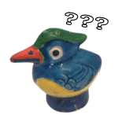 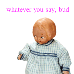 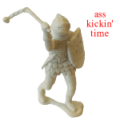 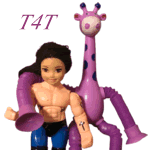 ⏵ INSTALL PACK (with text)
DELUXE GLUTEN-FREE PNGs Contains 33 misc stickers
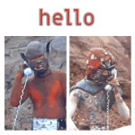 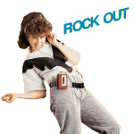 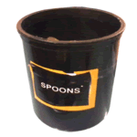 ⏵ INSTALL PACK
Contains 18 stickers from a vintage sticker sheet
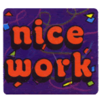 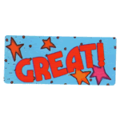 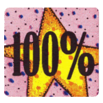 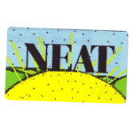 ⏵ INSTALL PACK
Contains 71 stickers from smiley.com from the early 00s, pulled from the wayback machine
|